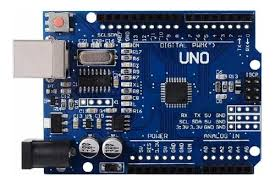

Microprocesadores en la Educación y Robótica
Los microprocesadores permiten el desarrollo de plataformas educativas como Arduino y kits de robótica, facilitando el aprendizaje de programación, electrónica y automatización desde edades tempranas. Gracias a ellos, los estudiantes pueden crear proyectos interactivos y comprender el funcionamiento interno de los dispositivos modernos.

Volver al inicio